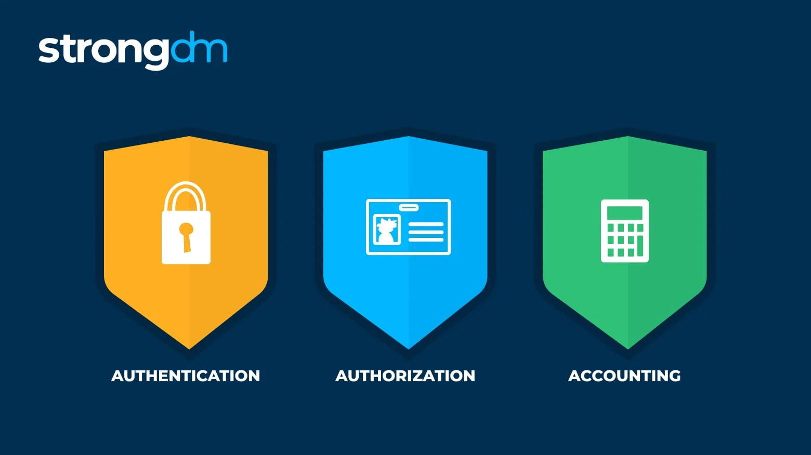
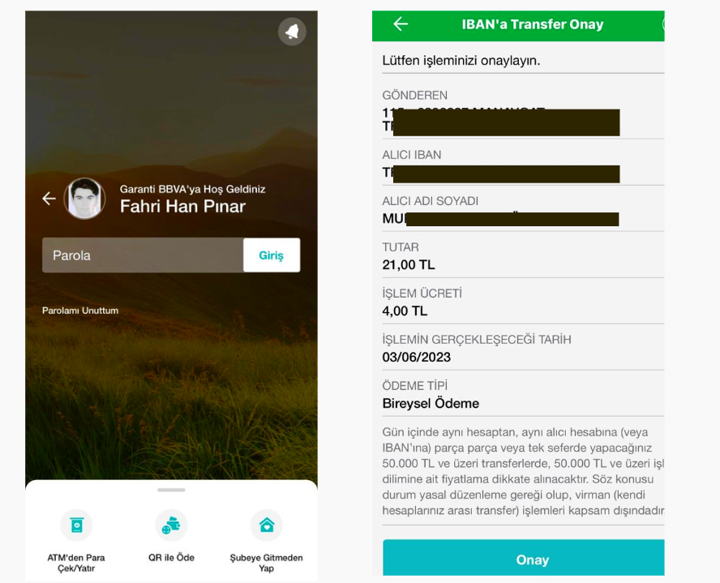
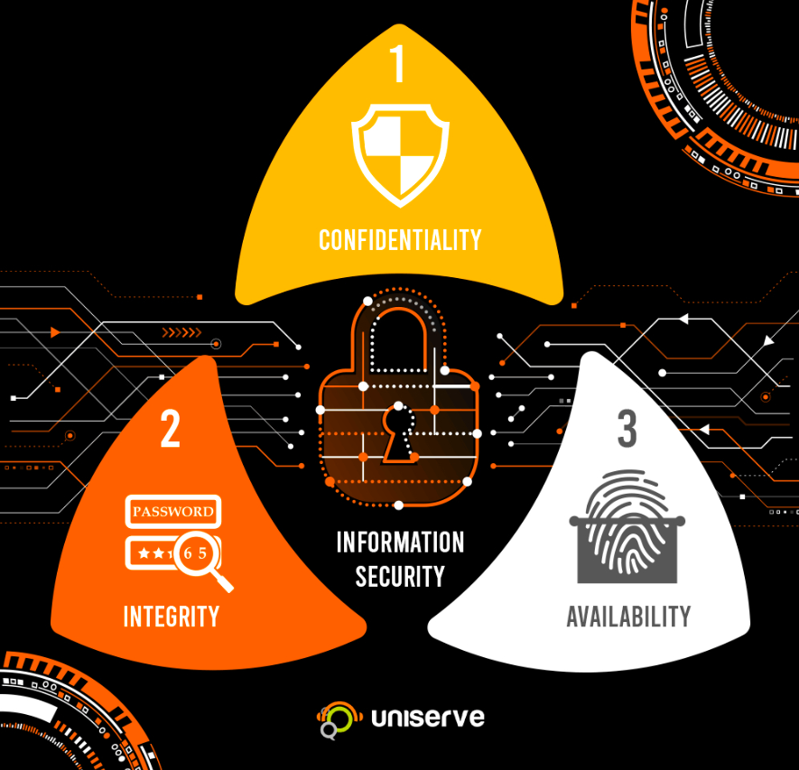
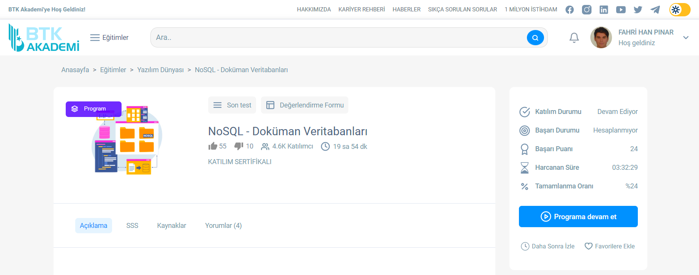
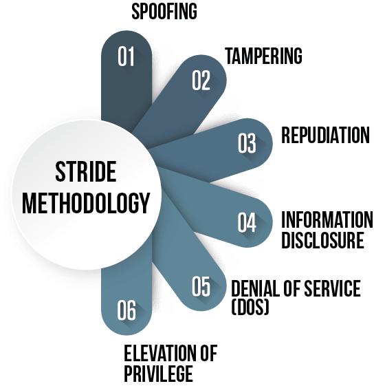
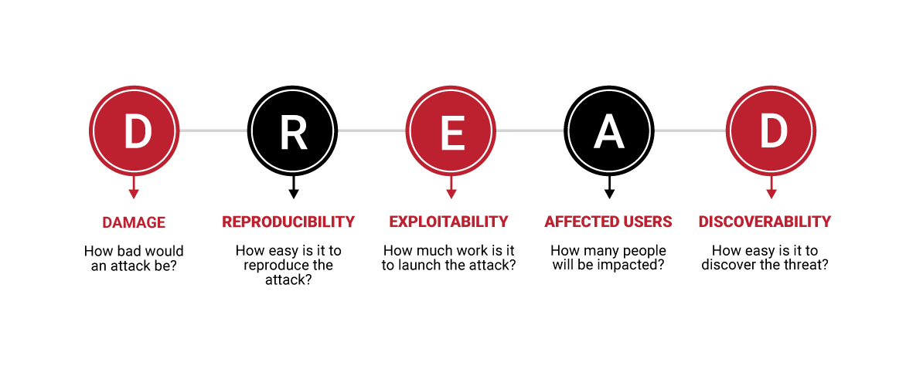
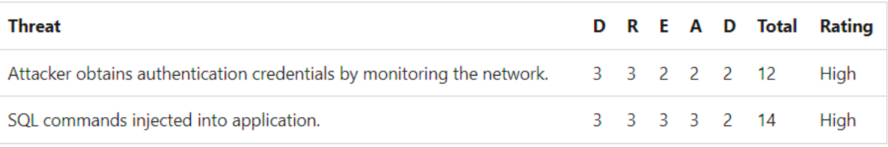

ACT-5
Triple A Model , we can say for it structure of Cyber Security. There is meaning "AAA" Authorization , Authentication , Accounting. they follow each other.Controls access to computer resources, enforces policies, and audits usage. AAA and its combined processes play a major role in network management and cybersecurity by screening users and keeping track of their activity while they are connected. Authentication : Basically checking valid user or not by using different methods (Login page , biological scanning...) If the user creditials are valid and match with on system user go to level 2 , second A (Authorization) Authorization : After the first A (Authentication) user gains some authority skills on commands. User can tell what he/she want from the system with commads.So authorization is different from authentication in that authentication only checks a user's identity, whereas authorization dictates what the user is allowed to do. Accounting : Keeps track of user activity , what he/she did inside/ what time accessing/ which files download,upload/ resources, network informations... System or third persons check and save what user done.
Let's give an example of AAA. I am user of a electronic bank applicaton and i need to transfer money to my friend.
Firstly i need to access my account on banking system by using my enterin credtials (Authentication), after that i need to give the command for trasnfering money
(Fill necessary areas and click send button. Authorization). Last part of the process is the Accounting. The banking system will save my datas
what have i done , update amount of my account , where money went ... This is accounting.


I want to explain another important concept CIA Model. Especially improtant for Dbs. According to my search there is a choice
Confidentially , Integrity and Availability Firsly why we use the CIA Model in Cyber Security. It has high level check list and effective tools in it. CIA helps about resources
and giving informations about system and user system is going to be better. Confidentially : Confidentiality indicates the effort of an organization to keep its data confidential.
It involves guaranteeing
that only authorized users have access to specific data so right user right data , wrong person nothing.
Integrity: integrity means ensuring that data is authentic, reliable, and has not been corrupted or tampered the main thing is consistency
after process data need to be safe not change. Availability : information system to be reliable and useful, it should be available to
authorized users when needed. Users can access the servers for 7/24 and their sensitive datas. I noticed that similar situation with NoSql dbs. NoSql Dbs have Also
three conditionsConsistency ,Partition ,Tolarance Availability but in NoSql we can get 2 of them not all of them we must choose 2. I need to tell you NoSql is developing so fast.
There are some important tools for NoSql Dbs most populer one is the MongoDB. Interface is not hard , funny , support cluster. I noticed that similar
situation thanks to a program which i attend recently. Datas are going from Sql to NoSql so for cyber security NoSql will be more critical point.


Our another model is STRIDE Model

It shows us how an attacker make plans and what are the steps of attack plan. If we can understand this plan we can make emphaty and create our plans
against hackers.
Spoofing Identity : Choosing a target and trying to get user informations (Social engineering is very useful here)
Tampering : After get creditials attacker tries unauthorized changing and alterind data with no permissions
Repudiation : Attacker hides what he/she did on system from anther users. (Secret)
Information Disclosure : Attacker tries to get , alter sensitive informations this section
Denial of Service DoS : Deny service the valid users using by huge data traffic and it makes the system slow , disconnected.
Elevation of Privilege : Attacker gains privilege access on data sets , sensitive informations.
The benefits of STRIDE MODEL ;
- The STRIDE Threat Model lays strong insights and vision for a larger security program.
- Helps to avoid vulnerabilities and threats from an early stage
- Cost-effective compared implementation to alternative threat modeling methodologies.
DREAD Model

The DREAD model enables analysts to rate, compare, and prioritize the threats as you seen the picture. I want to tell you one more thing
about DREAD Model. There are points for threats for every section as you seen above.If the total is higher than "10" It means level of risk is high.
